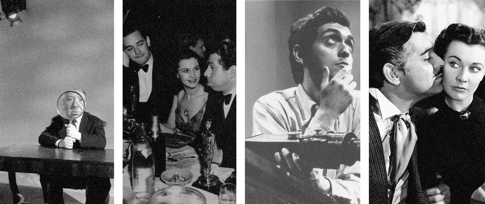

Oscar Predictors Accuracy
Overall Accuracy
Overall Accuracy (Past 10 Years)
4
Actors awarded by all 4 Predictors
5
Actress awarded by all 4 Predictors
10
Best Actor awarded
Best Actor awarded
by at least 1 Predictor
10
Best Actress awarded
Best Actress awarded
by at least 1 Predictor